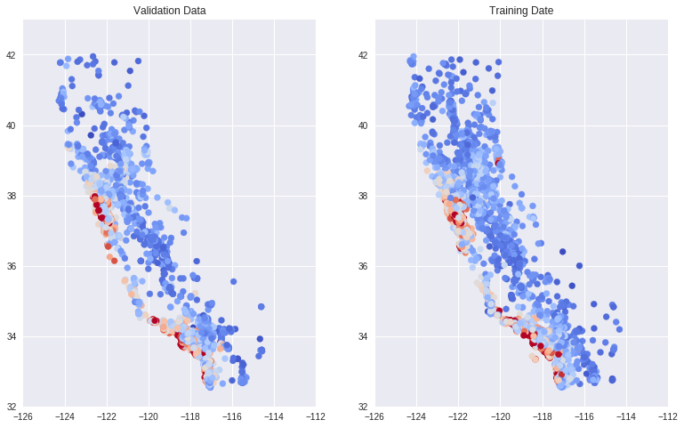

验证
通常我们会把数据分配为三分，训练集，交叉验证集和测试集，这样做的好处是为了避免过拟合，能够更好的泛化。

添加验证集后，我们的工作流程大概是这样的：

接下来的练习是尝试使用这个流程来训练
与在之前的练习中一样，我们将使用加利福尼亚州住房数据集，尝试根据 1990 年的人口普查数据在城市街区级别预测 median_house_value。
设置
首先加载并准备数据。这一次使用多个特征，因此把逻辑模块化，以方便对特征进行预处理
1 | from __future__ import print_function |
1 | def preprocess_features(california_housing_dataframe): |
我们从 17000 个样本中选前 12000 个样本 作 训练集
1 | training_examples = preprocess_features(california_housing_dataframe.head(12000)) |
| latitude | longitude | housing_median_age | total_rooms | total_bedrooms | population | households | median_income | rooms_per_person | |
|---|---|---|---|---|---|---|---|---|---|
| count | 12000.0 | 12000.0 | 12000.0 | 12000.0 | 12000.0 | 12000.0 | 12000.0 | 12000.0 | 12000.0 |
| mean | 34.6 | -118.5 | 27.5 | 2655.7 | 547.1 | 1476.0 | 505.4 | 3.8 | 1.9 |
| std | 1.6 | 1.2 | 12.1 | 2258.1 | 434.3 | 1174.3 | 391.7 | 1.9 | 1.3 |
| min | 32.5 | -121.4 | 1.0 | 2.0 | 2.0 | 3.0 | 2.0 | 0.5 | 0.0 |
| 25% | 33.8 | -118.9 | 17.0 | 1451.8 | 299.0 | 815.0 | 283.0 | 2.5 | 1.4 |
| 50% | 34.0 | -118.2 | 28.0 | 2113.5 | 438.0 | 1207.0 | 411.0 | 3.5 | 1.9 |
| 75% | 34.4 | -117.8 | 36.0 | 3146.0 | 653.0 | 1777.0 | 606.0 | 4.6 | 2.3 |
| max | 41.8 | -114.3 | 52.0 | 37937.0 | 5471.0 | 35682.0 | 5189.0 | 15.0 | 55.2 |
1 | training_targets = preprocess_targets(california_housing_dataframe.head(12000)) |
| median_house_value | |
|---|---|
| count | 12000.0 |
| mean | 198.0 |
| std | 111.9 |
| min | 15.0 |
| 25% | 117.1 |
| 50% | 170.5 |
| 75% | 244.4 |
| max | 500.0 |
我们从 17000 个样本中选择后 5000 个为 验证集
1 | validation_examples = preprocess_features(california_housing_dataframe.tail(5000)) |
| latitude | longitude | housing_median_age | total_rooms | total_bedrooms | population | households | median_income | rooms_per_person | |
|---|---|---|---|---|---|---|---|---|---|
| count | 5000.0 | 5000.0 | 5000.0 | 5000.0 | 5000.0 | 5000.0 | 5000.0 | 5000.0 | 5000.0 |
| mean | 38.1 | -122.2 | 31.3 | 2614.8 | 521.1 | 1318.1 | 491.2 | 4.1 | 2.1 |
| std | 0.9 | 0.5 | 13.4 | 1979.6 | 388.5 | 1073.7 | 366.5 | 2.0 | 0.6 |
| min | 36.1 | -124.3 | 1.0 | 8.0 | 1.0 | 8.0 | 1.0 | 0.5 | 0.1 |
| 25% | 37.5 | -122.4 | 20.0 | 1481.0 | 292.0 | 731.0 | 278.0 | 2.7 | 1.7 |
| 50% | 37.8 | -122.1 | 31.0 | 2164.0 | 424.0 | 1074.0 | 403.0 | 3.7 | 2.1 |
| 75% | 38.4 | -121.9 | 42.0 | 3161.2 | 635.0 | 1590.2 | 603.0 | 5.1 | 2.4 |
| max | 42.0 | -121.4 | 52.0 | 32627.0 | 6445.0 | 28566.0 | 6082.0 | 15.0 | 18.3 |
1 | validation_targets = preprocess_targets(california_housing_dataframe.tail(5000)) |
| median_house_value | |
|---|---|
| count | 5000.0 |
| mean | 229.5 |
| std | 122.5 |
| min | 15.0 |
| 25% | 130.4 |
| 50% | 213.0 |
| 75% | 303.2 |
| max | 500.0 |
检查数据
我们根据基准预期情况检查一下我们的数据：
对于一些值（例如
median_house_value），我们可以检查这些值是否位于合理的范围内（请注意，这是 1990 年的数据，不是现在的！）。对于
latitude和longitude等其他值，我们可以通过 Google 进行快速搜索，并快速检查一下它们与预期值是否一致。
如果您仔细看，可能会发现下列异常情况：
median_income位于 3 到 15 的范围内。我们完全不清楚此范围究竟指的是什么，看起来可能是某对数尺度？无法找到相关记录；我们所能假设的只是，值越高，相应的收入越高。median_house_value的最大值是 500001。这看起来像是某种人为设定的上限。rooms_per_person特征通常在正常范围内，其中第 75 百分位数的值约为 2。但也有一些非常大的值（例如 18 或 55），这可能表明数据有一定程度的损坏。
绘制维度/经度与房屋价值中位数的曲线图
我们来详细了解一下 latitude 和 longitude 这两个特征。它们是相关城市街区的地理坐标。
利用这两个特征可以提供出色的可视化结果 - 我们来绘制 latitude 和 longitude 的曲线图，然后用颜色标注 median_house_value。
1 | def plot_scatter(training_examples, training_targets, validation_examples, validation_targets): |
1 | plot_scatter(training_examples, training_targets, validation_examples, validation_targets) |
现在应该已经呈现出一幅不错的加利福尼亚州地图了，其中旧金山和洛杉矶等住房成本高昂的地区用红色表示。
根据训练集呈现的地图有几分像真正的地图，但根据验证集呈现的明显不像。
查看上面的摘要统计信息表格时，很容易产生想知道如何进行有用的数据检查的想法。每个街区 total_rooms 的第 75 百分位的正确值是什么？
需要注意的关键一点是，对于任何指定特征或列，训练集和验证集之间的值的分布应该大致相同。
我们真正需要担心的是，真实情况并非这样，这一事实表明我们创建训练集和验证集的拆分方式很可能存在问题。
随机化处理数据
我们需要在读入数据时，对数据进行随机化处理的。
如果我们在创建训练集和验证集之前，没有对数据进行正确的随机化处理，那么以某种特定顺序接收数据可能会导致出现问题（似乎就是此时的问题）。
发现并解决问题后，重新运行上面的 latitude/longitude 绘图单元格，并确认我们的健全性检查的结果看上去更好了。
顺便提一下，在这一步中，我们会学到一项重要经验。
机器学习中的调试通常是数据调试而不是代码调试。
如果数据有误，即使最高级的机器学习代码也挽救不了局面。
1 | california_housing_dataframe = california_housing_dataframe.reindex( |

好的，这次的结果来看训练集和验证集都有相似的分布。
训练和评估模型
尝试不同的超参数，获得最佳验证效果。
首先定义输入函数
1 | def my_input_fn(features, targets, batch_size=1, shuffle=True, num_epochs=None): |
由于我们现在使用的是多个输入特征，因此需要把用于将特征列配置为独立函数的代码模块化。（目前此代码相当简单，因为我们的所有特征都是数值，但当我们在今后的练习中使用其他类型的特征时，会基于此代码进行构建。）
1 | def construct_feature_columns(input_features): |
接下来，继续完成 train_model() 代码，以设置输入函数和计算预测。
注意：可以参考以前的练习中的代码，但要确保针对相应数据集调用 predict()。
比较训练数据和验证数据的损失。使用一个原始特征时，我们得到的最佳均方根误差 (RMSE) 约为 180。
现在我们可以使用多个特征，不妨看一下可以获得多好的结果。
使用我们之前了解的一些方法检查数据。这些方法可能包括：
比较预测值和实际目标值的分布情况
绘制预测值和目标值的散点图
使用
latitude和longitude绘制两个验证数据散点图：- 一个散点图将颜色映射到实际目标
median_house_value - 另一个散点图将颜色映射到预测的
median_house_value，并排进行比较。
- 一个散点图将颜色映射到实际目标
1 | def train_model( |
1 | linear_regressor = train_model( |
Training model...
RMSE (on training data):
period 00 : 217.57
period 01 : 200.14
period 02 : 185.74
period 03 : 175.52
period 04 : 170.71
period 05 : 167.06
period 06 : 165.72
period 07 : 165.65
period 08 : 166.77
period 09 : 168.40
Model training finished.
基于测试数据进行评估
载入测试数据集并据此评估模型。
我们已对验证数据进行了大量迭代。接下来确保我们没有过拟合该特定样本集的特性。
测试数据集位于此处。
1 | california_housing_test_data = pd.read_csv("https://download.mlcc.google.cn/mledu-datasets/california_housing_test.csv", sep=",") |
Final RMSE (on test data): 162.99